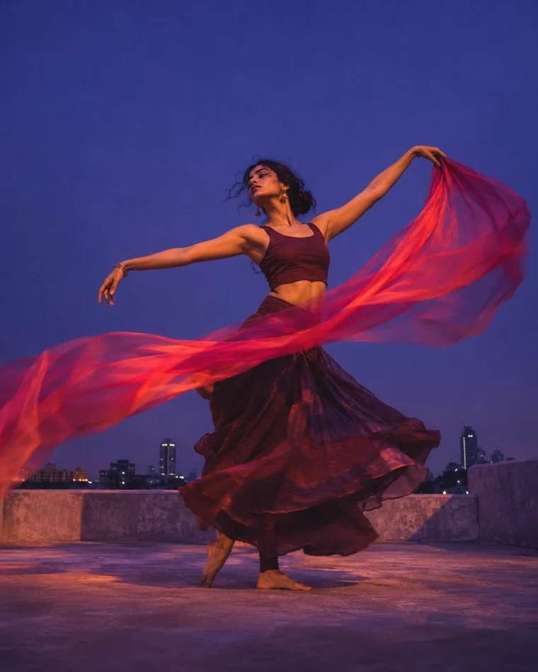

Bengaluru / ArtsAvI Studio
Afterglow.
A city in motion after dark.
Turn a headline, article, or idea into a poster or carousel. Create in English or Kannada, then download or publish.
Open Poster StudioDrag to compare

A city in motion after dark.
Choose the canvas, newsroom, or tool you need for your next story.
Build a standalone visual with a searchable layout gallery and a large canvas.
Fit layouts to the story. Edit and reorder frames on the canvas or grid.
Generate with the free community queue, then download the image or use it in a poster.
Browse English and Kannada feeds and turn headlines into a news roundup.
Research a developing topic with Gemini and build a timeline, explainer, or reaction roundup.
Plan ideas in your browser, run scheduled drafts, or publish editions once configured.
Follow a sample story through the tools you’ll use to make it and share it.